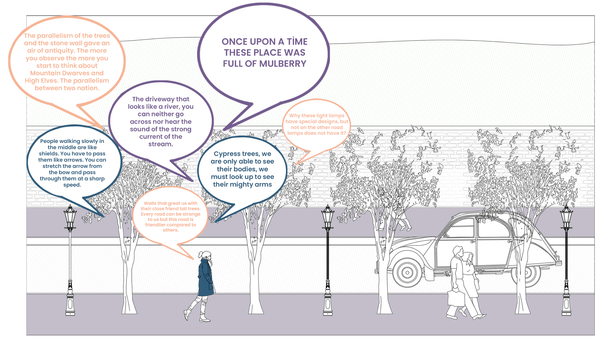
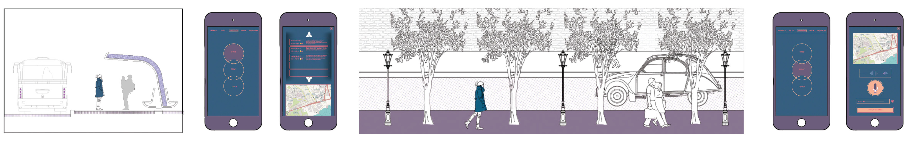
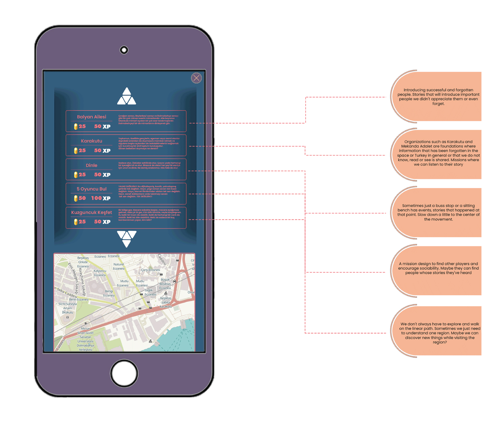
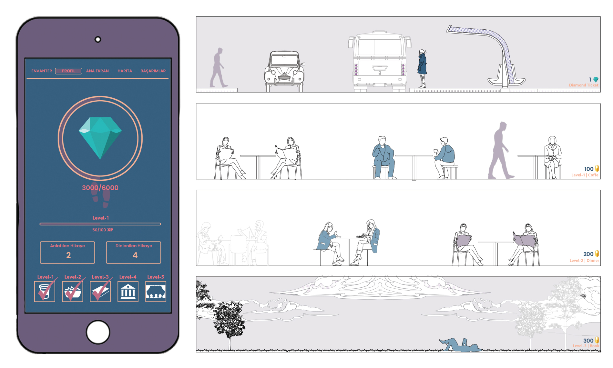
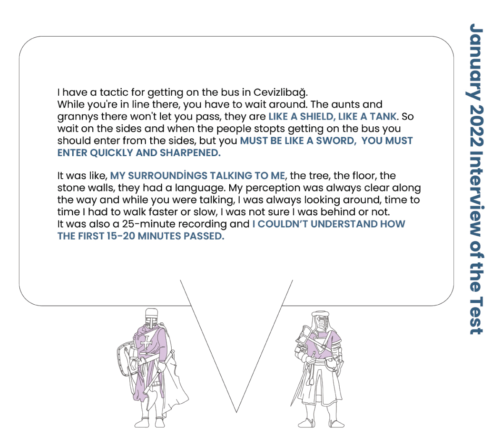

Research and analysis
Studio Instructors: Zuhal Kol | Carlos Zarco Sanz
Games have always been an integral part of our lives, whether we realize it or not. While we may tend to associate games with activities primarily enjoyed by children, the concept of play is much broader and universal. Animals, for instance, also engage in play with each other, using nature as their playground. This highlights the interdependence between nature and play, as animals become more aware of their environment through play.
This research aims to explore how we can regain our perception of the city and our awareness of it, which has been lost in Istanbul due to the fast-paced and consumption-oriented lifestyle that dominates the city. In this context, the concept of metabolism is essential, as it refers to the chemical reaction that allows living beings to survive and acquire energy. Can we not also consider a city as a living entity? A city only remains alive as long as there is human activity, but in the current state of Istanbul, the city has become unfamiliar to its inhabitants, with people forgetting its past and its people.
To tackle this issue, the research will begin by discussing the role of games in society. Then, by identifying specific elements and objectives, we will explore how we can rekindle our connection with the city. The ultimate goal is to design a game that can help readers simulate the experience of rediscovering Istanbul and its hidden treasures.

What is Game?
“The game, as a phenomenon observable by everyone, covers both the animal kingdom and the human kingdom at the same time. Consequently, it cannot be based on any rational relationship; because its rationalization would limit it to the human realm. The existence of the game does not depend on any level of civilization, on any form of understanding the universe.” (Homoludens, Johan Huizinga)
The game has a universal integrity and the absolute game is not a simple concept. There are not only human beings, but also animals, nature, and maybe even living things that we have not encountered. Because the game is universal. It exists not only in living things but also in ideas. When the cultures started, the game started. Making masks of fictional creatures and imitating them to perform certain rituals is a role-playing game. When we consider the basic, primitive games, we can see that a universal game remains universal when we look at how the chase game continues over the years.

Game & Cosmic Relationship
With the advancement of technology, new games began to form. By transferring the games we play to digital, we have carried our imagination to the highest level to experience better. Of course, with these blessings came their sins. The fact that digital games operate in their universe has limited the game. Of course, his imagination has developed a talent for problem-solving, which are his blessings, but social disconnection, escapism, and toxic social environments are also his sins. Certain app games have also been developed on these social issues. The game’s purpose, which pushes people to the outdoors and increases communication, but when it meets them, did not make it a sustainable game.
When we briefly read the basis of the game, we understand that it is in a cosmic context, but the concept of the game changes over time. As technology evolves, people evolve too. Digital games, on the other hand, are now starting to take place in their universe. While the game is actually in a context in our world, it moves to a different world and puts the character at the focal point, breaking this cosmic context. Where apps are games, they focus on socializing, but again putting the player in focus and focusing on human interaction. We can understand the breaking of these cosmic connections by analyzing these games.

Progression
The game is designed according to the result obtained from the items in the diagram. The absolute aim is to explore the city and society by using the mechanics of a D&D (Dungeons and Dragons) game in the city and speeding up time perceptually while walking. The game consists of three steps. Listen, Tell and Mission. When you select anywhere on your phone, a list will appear. There will be story lists in the list and it is stated on which route these stories are told. If it intersects with the route you are going to walk, or if you want to explore, you can choose that route and listen. So what will you listen to? There will be stories obtained from the Tell Stories section.
The narration part is completely left to the actors, it is up to how they want to read the city based on their perspectives on the city. Of course, with these readings and perspectives, players will be able to customize their maps and show them what kind of place Istanbul is for you.
Of course, not only listening but also “encounter”, one of the sine qua non of D&D, will also take place. While the player is listening, they will have to look at the phone with a warning in the middle of the story, and the scenario they encountered will be shown and their choices on these scenarios and the results of these choices will be included. For example, if you witness the movement of a bush and throw a stone at the bush, the next character you encounter will encounter an aggressive attitude, and if you kill the character, you can earn gold, but you will lose the level and you will not meet that character again.
Game & Culture
“Culture is born in the form of play, culture is something that is played from the beginning. Even activities aimed directly at the satisfaction of vital needs, such as hunting, easily take the form of play in the archaic community.” (Homoludens, Johan Huizinga, 1936) We can deduce that the game has always been inside us, that a game has taken place since the beginning of culture, and that our cultural activities were built around a game. These are things we do in our culture right now, but things we don’t think of as games. For example, in the classic Santa Claus story, the father secretly tries to leave the presents on Christmas night, and if he is caught, the game is broken.
“The community expresses its way of interpreting life and the world in these plays. That is, it is necessary to understand that the game does not turn into culture, but on the contrary, from the very first stages of culture, a game carries its lines and develops under game forms and in the game environment.” (Homoludens, Johan Huizinga, 1936)One reason for mentioning this is that we call culture, although each one is different from the other, the only common point of all of them is that it is a game. That is, they have a universal language.

How to get Experience
Experience gains will only be included in missions. When we level up in games, our character develops, but since we are the character here, our own character should develop. In order to achieve this, it is designed to remind the forgotten cultures and memories. Reminder of the forgotten identity of the city. There are two types of rewards in the game. Diamonds and gold. You can earn diamonds by reaching your step goals, and it is planned to be used as a ticket on public transport. After all, if we’re going to encourage walking, we should also provide an opportunity to rest. Golds are planned to be earned by doing quests or listening to stories. The gold won is the purchase of coffee and food from the IBB’s buffets, and the purchase of books from the library. In other words, it is planned to increase the options that the character can improve as the character level up.

Rewards of Quests
While these were being planned, they were based on the awards given in the “Yürü Be Istanbul” project that IBB had previously made and the awards mentioned during the project process. One of the main reasons the reward system is planned this way is to allow the player to feel and experience “character development”. Of course, not only that, but the players will be able to trade gold and diamonds among themselves if they wish. It is planned not only to stay in this fictional game, but also to interact with anyone in the outside world in the game.
Result of Interview
In the process, it cannot be learned until you try whether the theoretical part of this game, namely the storytelling part, works. Therefore, a storytelling audio recording was taken while walking the Dolmabahçe street between Kabataş and Beşiktaş. The story told was told both in a fictional language and from an architectural point of view. The story of the environment was depicted through the eyes of the narrator, as was the baroque architecture, the material of the floor. The listener, on the other hand, was chosen as a non-professional person and began to listen to that path by walking. As a result, a ten-minute interview was conducted and published. In the interview, the user stated that he did not understand how the time passed in the first fifteen, twenty minutes and it was as if the place was talking to himself while walking. For example, while talking about a relic in the story, he said that he was there when he talked about it, and that he saw it when he looked up. Not only that, he also told that he wanted to tell a story, even in a more fictional language in the example he gave. As a result, I think a promsing result has been reached.
